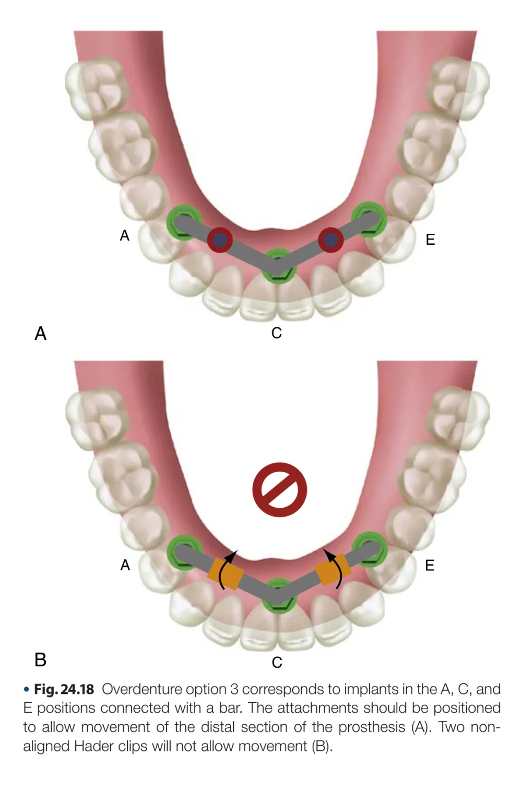
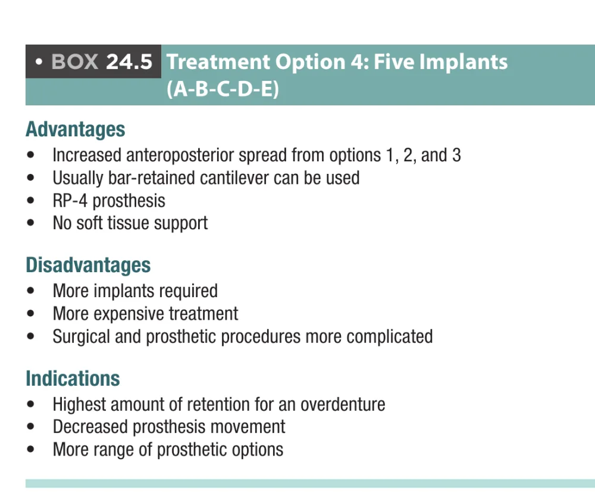

نسخه استخراجشده؛ ترجمه یا تأیید علمی انجام نشده است. وضعیت: captured
گزینهی اوردنچر ۳ (OD-3): چهار ایمپلنت در جایگاههای A، B، D و E.
اینها معمولاً پشتیبانی کافی میدهند تا یک کانتیلور دیستالی تا ۱۰ میلیمتر در هر طرف گنجانده شود — اگر عوامل تنش پایین باشند.
و سه دلیل هست که چرا کانتیلور از چهار ایمپلنت به بعد یک ویژگی میشود:
دلیل سوم ظریفترین است: کانتیلور خودش عارضه میسازد — و ایمپلنتهای بیشتر همان عارضه را مهار میکنند. یعنی کانتیلور و شمار ایمپلنت با هم رشد میکنند، نه جدا از هم.
حالا مکانیک — و این را باید بتوانی روی کاغذ حساب کنی:
«کانتیلورها را میتوان با یک اهرم درجهیک در مکانیک مقایسه کرد. دورترین ایمپلنت هر طرف بهعنوان فولکروم عمل میکند وقتی نیروهای اکلوزالی به کانتیلور دیستالی وارد میشوند. بنابراین مقدار نیروی اکلوزالی در طول کانتیلور ضرب میشود، که مانند یک اهرم عمل میکند.»
یک مثال عددی: یک بار ۲۵ پوندی به یک کانتیلور ۱۰ میلیمتری به ممانی برابر ۲۵۰ پوند، میلیمتر میانجامد.
و این ممان چگونه مهار میشود؟ «توسط طول بارِ قدامیِ فولکروم.» پس:
به عدد آخر خوب نگاه کن. ایمپلنت فولکروم سه برابر نیروی اصلی را میگیرد — و بیشترین سهم از همه. در یک سیستم کانتیلوردار، ایمپلنت فولکروم — نزدیکترین ایمپلنت به کانتیلور — بیشترین نیرو را میگیرد.
و اکنون فرم قوس، که A-P spread را تعیین میکند:
و بلافاصله یک هشدار: A-P spread تنها یک عامل است: وقتی عوامل تنش مانند نیروهای اکلوزالی بیشتر باشند، کانتیلور کاهش مییابد. و: «وقتی ارتفاع تاج دو برابر شود، نیروهای ممان دو برابر میشوند.»
و سقف مجاز، تنها در شرایط ایدهآل: «تحت شرایط ایدهآل و کمنیرو — ارتفاع تاج کمتر از ۱۵ میلیمتر، بدون پارافانکشن، زنان مسنتر، و دنچر ماگزیلای مقابل — کانتیلور میتواند تا ۱٫۵ برابر A-P spread برای اوردنچرهای OD-3 باشد.»
به فهرست چهارگانهی شرایط دقت کن. اینها همان عوامل نیرویی هستند که در سراسر این تخصص دیدهای — و اینجا بهصورت یک مجوز عددی مشخص درآمدهاند. این ضریب فقط برای همین شرایط ایدهآل گفته شده؛ هرچه نیرو بیشتر، کانتیلور کوتاهتر.

نخست، اندیکاسیونهای OD-3 و یک محدودیت مهم:
OD-3 برای آناتومی خلفی متوسط تا ضعیف است که به نبود گیر و پایداری، سایشهای بافت نرم و دشواری تکلم میانجامد.
و دو واقعیت آناتومیک را به یاد بیاور: مندیبل خلفی بیدندان چهار برابر سریعتر از مندیبل قدامی تحلیل میرود. و در مندیبل خلفی C−h، ریجهای ابلیک خارجی و مایلوهایوئید بلندند و اغلب با کرست ریج باقیمانده منطبق میشوند — یعنی اتصالات عضلانی روی کرست ریج قرار میگیرند.
و یک نکتهی حیاتی دربارهی OD-3 که بهراحتی از قلم میافتد: «پروتز همچنان RP-5 است، ولی با کمترین ساپورت بافت نرم در میان همهی طراحیهای RP-5.» — این حالتِ عوامل نیروی نامساعد است؛ با عوامل نیروی مساعد، همین چهار ایمپلنت میتواند یک RP-4 را پشتیبانی کند.
و الزام حرکتیاش: «اتچمنت قدامی باید حرکت عمودی را ممکن کند تا بخش دیستال پروتز به سمت بافت بچرخد.» و هشدار فنی: کلیپهایی که چرخش را ممکن میکنند، روی سوپراستراکچرهای کانتیلوردار دشوارند — کلیپ باید عمود بر مسیر چرخش قرار گیرد، نه در امتداد بار کانتیلورشده، جایی که تنها کارکردش گیر است.
و یک سود پنهان موقعیت: پروتز بافت نرم را تنها روی مولر اول و دوم و ناحیهی رتروومولار پد بار میکند. «بنابراین مقدار نیروی اکلوزالی کاهش مییابد چون بار به موقعیت مولر امتداد نمییابد، جایی که نیروها بیشترند.»
حالا گزینهی اوردنچر ۴ (OD-4): پنج ایمپلنت در A-B-C-D-E.
این گزینه برای سه نوع بیمار طراحی شده — و هر سه را باید بشناسی:
بیمار نوع یکم — سختگیرترین انتظارها. این حداقلِ گزینهی درمانی برای بیمارانی است که مشکلات متوسط تا شدید با ترمیم سنتی دارند. خواستههایشان شامل محدود کردن حجم یا مقدار پروتز، نگرانیهای عمده دربارهی عملکرد یا پایداری، زخمهای خلفی، و ناتوانی در پوشیدن دنچر مندیبل است.
بیمار نوع دوم — تحلیل ادامهدار استخوان خلفی. و اینجا مهمترین جملهی این درس میآید:
«اگر هیچ بار پروتزی بر استخوان خلفی نباشد، فرایند تحلیل بهطور چشمگیری به تأخیر میافتد و معمولاً معکوس میشود.»
بیمار نوع سوم — زخمهای شدید بافت نرم یا سابقهی خشکی دهان (زروستومیا). «بهدلیل ماهیت کاملاً ساپورتشدهی این طرح درمان، هیچ نیروی حاصلی بر بافت نرم وارد نمیشود.»
و نتیجهی مشترک این سه: «حتی وقتی هیچ ایمپلنت خلفی قرار داده نمیشود، اتچمنتها، بار کانتیلورشده و اوردنچر از بار وارد شدن بر ریج باقیمانده پرهیز میکنند و اغلب فرایند تحلیل آن را متوقف میکنند.» و مطالعات نشان دادهاند پروتزهای کاملاً ایمپلنتساپورتد ممکن است ارتفاع استخوان خلفی را افزایش دهند، حتی وقتی هیچ ایمپلنت خلفی گذاشته نشده.
اما گزینهی بهتری هم هست: «گزینهی بهتر برای پیشگیری از این تحلیل استخوان، قرار دادن ایمپلنتهای خلفی پیش از آغاز آتروفی است.» و این حالت وقتی محتملتر است که بیمار ترمیم ثابت بخواهد یا فرم قوس مربعی باشد. — یعنی برگرداندن استخوان خوب است، ولی نگه داشتنش بهتر.
و ترازنامهی OD-4: مزایا — افزایش A-P spread نسبت به گزینههای ۱، ۲ و ۳، معمولاً کانتیلور بار-ریتیند قابل استفاده است، پروتز RP-4، بدون ساپورت بافت نرم. معایب — ایمپلنت بیشتر، درمان گرانتر، جراحی و پروتز پیچیدهتر. اندیکاسیونها — بیشترین مقدار گیر برای یک اوردنچر، کاهش حرکت پروتز، دامنهی بیشتری از گزینههای پروتزی.
و اکنون کل این درس در یک تشبیه که برای آموزش بیمار پیشنهاد میشود: OD-1 = صندلی دوپایه (کمی ساپورت عمودی میدهد ولی جلو و عقب میرود)، OD-2 = صندلی سهپایه (ساپورت بیشتر، ولی زیر نیروی جانبی به یک سو میچرخد)، OD-3 و OD-4 = صندلی چهارپایه (پروتزهای پایدار و گیردار).
و همینجا تفاوت بنیادی را ببین: OD-1 و OD-2 پروتز RP-5 میسازند (بافت نرم ساپورت اصلی)، OD-3 بسته به عوامل نیرو RP-4 یا RP-5 است، و OD-4 پروتز RP-4 است (بدون ساپورت بافت نرم). پس مرز RP-5 و RP-4 در مندیبل از OD-3 میگذرد و عوامل نیرو آن را تعیین میکنند.
و اکنون دادههایی که ادعای «معکوس شدن تحلیل» را به عدد تبدیل میکنند — چون این ادعا بدون داده باورکردنی نیست.
نخست، خطِ پایهی تحلیل: مطالعات تأیید کردهاند که پس از کشیدن دندانهای مندیبل، بهطور میانگین ۴ میلیمتر تحلیل عمودی استخوان در سال نخست پس از درمان رخ میدهد. و این تحلیل بهطور نامحدود ادامه مییابد، با مندیبلی که چهار برابر بیشتر از ماگزیلا تحلیل عمودی را تجربه میکند.
و اکنون همان استخوان، زیر یک اوردنچر: «استخوان زیر یک اوردنچر ممکن است تنها ۰٫۶ میلیمتر بهصورت عمودی در طول ۵ سال تحلیل رود، و تحلیل درازمدت ممکن است کمتر از ۰٫۰۵ میلیمتر در سال باقی بماند.»
مقایسه را انجام بده: ۴ میلیمتر در سالِ نخستِ پس از کشیدن، در برابر ۰٫۶ میلیمتر در پنج سال زیر اوردنچر. تفاوت فاحش است، هرچند سال نخست پس از کشیدن سریعترین دورهی تحلیل است.
و مطالعهای که RP-5 را مستقیماً با ثابت مقایسه کرد — و نتیجهاش غافلگیرکننده است:
یک مطالعه تحلیل استخوان مندیبل خلفی را در اوردنچرهای RP-5 با پروتزهای ثابت کانتیلوردار روی ایمپلنتهای قدامی مقایسه کردند:
این یافته را با دقت بخوان. RP-5 استخوان خلفی را از دست میدهد و پروتز ثابت آن را بهدست میآورد — و علتش دقیقاً همان چیزی است که در بیمار نوع دوم OD-4 خواندی: RP-5 بافت نرم خلفی را بار میکند، ولی پروتز ثابت (و RP-4) هیچ باری بر ریج خلفی نمیگذارد.
و مطالعهای دیگر همین مشاهده را در ۶۰ بیمار متوالی تأیید کرد: پروتزهای ثابت کانتیلوردار روی پنج تا شش ایمپلنت بین فورامنها. ارتفاع بادی مندیبل در فاصلههای ۵، ۱۰، ۱۵ و ۲۰ میلیمتری دیستالِ آخرین ایمپلنت اندازهگیری شد. از خط پایه تا ۴ سال پس از عملکرد، اندازه از ۷٫۲۵ ± ۰٫۲۵ به ۸٫۱۸ ± ۰٫۱۸ میلیمتر افزایش یافت.
و جزئیاتی که زمانبندی درمان را روشن میکند: «تقریباً تمام رشد استخوان در سال نخست عملکرد رخ داد.» — یعنی بیشترِ رشد استخوان خلفی در همان سال نخست پس از بارگذاری دیده میشود.
